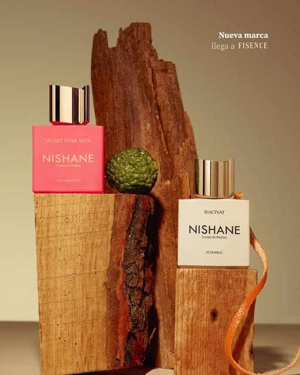

Proyecto destacado · Desde el 16 de octubre de 2026
Cuatro cuentas.
Una voz para cada marca.
Soy Community Manager en 5th Essence Square. Propongo ideas, selecciono y adapto materiales, preparo los textos y llevo la publicación y la comunidad de cuatro cuentas con personalidad propia.



+16,2 %Crecimiento orgánico · FISENCE
672 → 781 seguidores
Entre el 19 de octubre y el 20 de noviembre de 2026, FISENCE pasó de 672 a 781 seguidores: 109 personas más en la comunidad. Crecimiento orgánico con la gestión de contenidos y comunidad íntegramente a mi cargo.
Contenido · Edición · Copy · Publicación · Comunidad
Ver el proyecto →